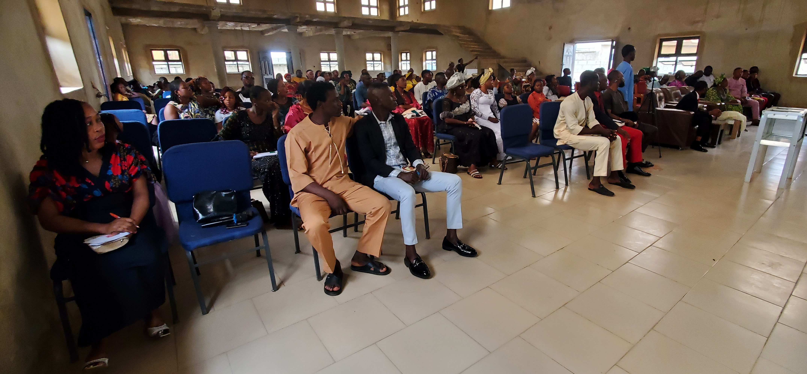
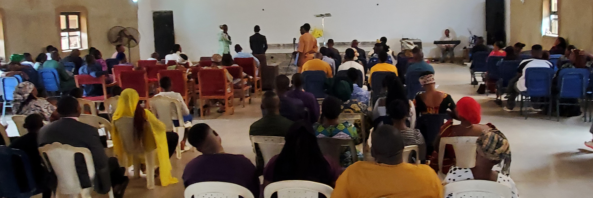

Worship
Worship & Praise
Leader: Choir Director, Esther James
Helping hearts respond to God in spirit and in truth through music, prayer, and heartfelt worship.
GROW IN SERVICE
From worship to outreach, each ministry is designed to help people grow spiritually and make a meaningful impact in the church and the community.
Back to Jubilee HouseOUR MINISTRIES
There are many ways to be part of the body of Christ—whether you lead, serve, pray, or encourage others.
Leader: Choir Director, Esther James
Helping hearts respond to God in spirit and in truth through music, prayer, and heartfelt worship.

Leader: Children’s Pastor, Grace Okafor
Creating a safe and joyful place where young people can learn, play, and grow in faith.

Leader: Youth Pastor, Daniel Adeyemi
Equipping the next generation to live boldly for Christ through discipleship, community, and purpose.

Leader: Prayer Coordinator, Ruth Abiola
Standing in the gap through heartfelt prayer, spiritual insight, and support for the church family.

Leader: Media Director, Michael Nwosu
Using creative tools to share the message of Jesus with clarity, excellence, and impact.

Leader: Outreach Pastor, Francis Eze
Serving the wider community through compassion, evangelism, food support, and practical acts of love.